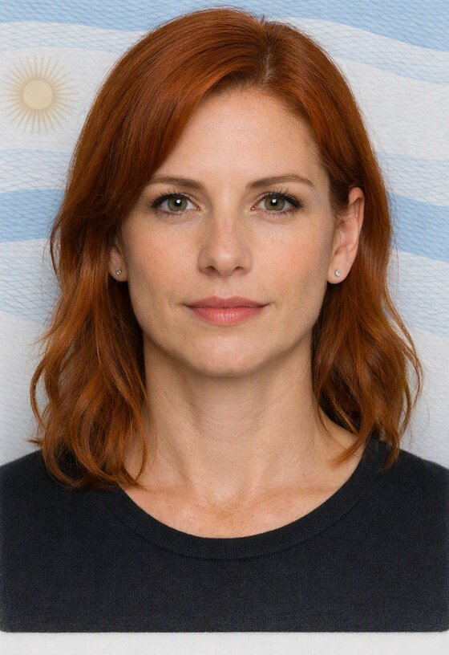
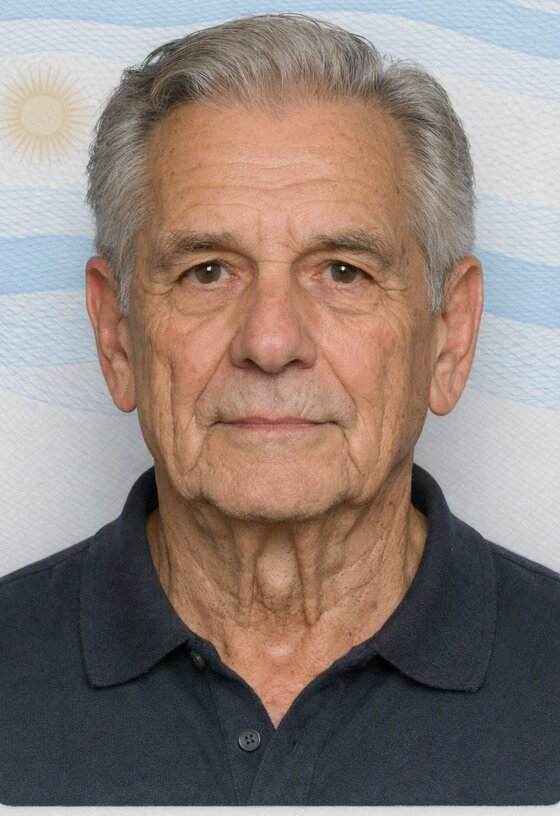
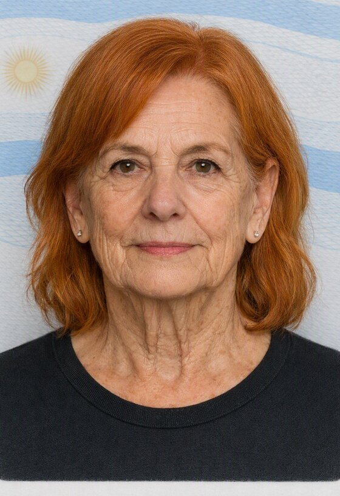
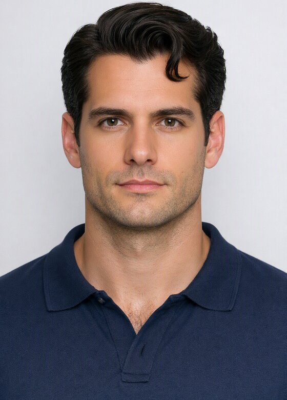

Renata Salas
Trabaja con grandes formatos donde el color se aplica en capas hasta lograr superficies vibrantes.
Técnicas:
- Óleo sobre tela
- Acrílico
Cuatro artistas de la ciudad que forman parte de la muestra actual.

Trabaja con grandes formatos donde el color se aplica en capas hasta lograr superficies vibrantes.
Técnicas:

Ceramista que combina esmaltes minerales con formas geométricas inspiradas en la arquitectura del barrio.
Técnicas:

Fotografía documental en blanco y negro sobre la vida cotidiana de los talleres de la zona norte.
Técnicas:

Explora el collage y el ensamblaje con materiales recuperados, entre la pintura y el objeto.
Técnicas: